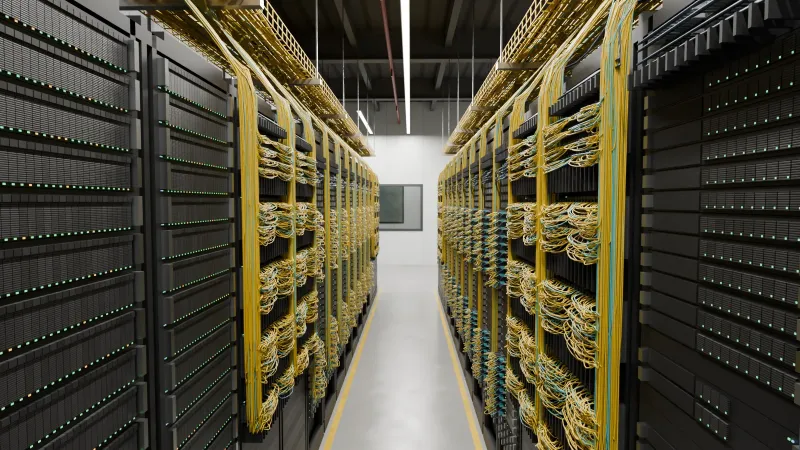
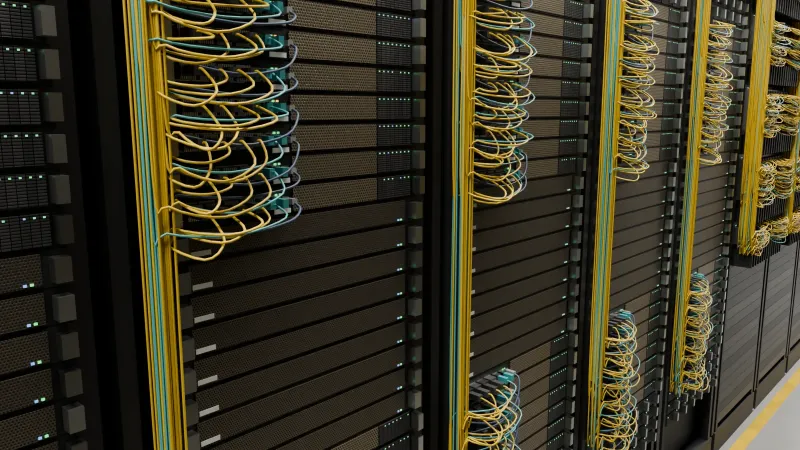
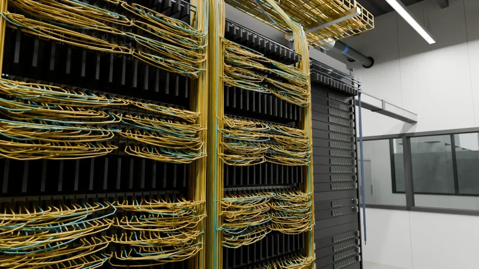
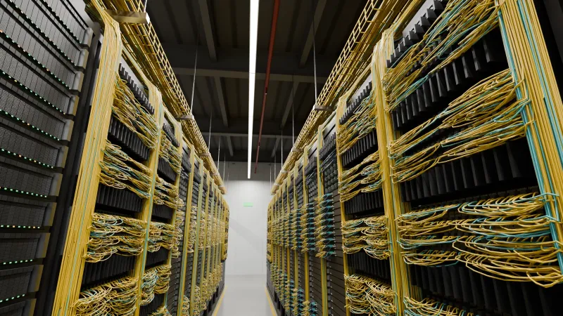
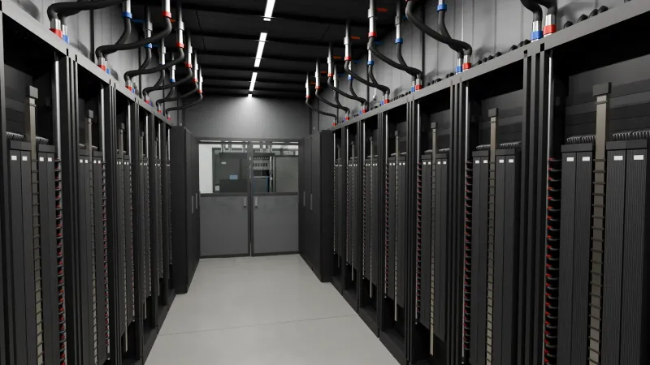
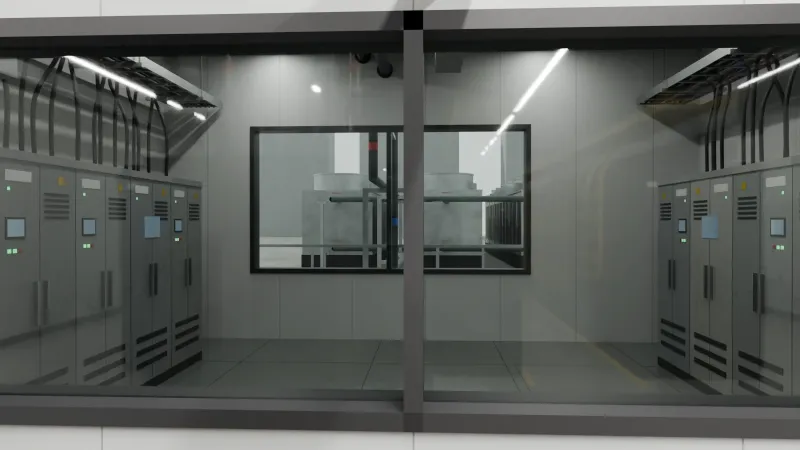

1 ／ 部屋の全景
GPU のラックは 8 本で1組

通路の両側に黒いラックが並びます。GPU のラックは 8 本で1組になり、1組で GPU は 576 個、電気は約 1.2 MW を使います。家庭なら 400 軒ほどの量です（1軒 3 kW で換算）。
GPU のラックの両側にネットワークのラック、列の端にストレージと管理のラックが立ちます。
- 8 本GPU ラック1組
- 576 個1組の GPU
- 約 1.2 MW1組の電気
2 ／ GPU のラック
1本に GPU が 72 個

高さ 2.2 m、幅 60 cm のラックに GPU が 72 個入っています。72 個は銅のケーブルで直結されていて、1つの大きな GPU のように動きます。
前面に見える黄色い線は光ファイバです。ラックの外にある GPU とつながります。
- 72 個1本の GPU
- 約 120 kW1本の電気
- 1.8 TB/sGPU 1個の NVLink
3 ／ ネットワークのラック
網は線ごと分かれている

ラックとラックをつなぐスイッチのラックです。GPU どうしの網、データを保存する網、機器を管理する網は、線そのものが別になっています。
一番上の小さなスイッチは管理用です。会社のフロアにあるスイッチ（Catalyst など）に一番近い役目をしています。
- 4 つ物理的に分かれた網
- 約 18 分の1ラックの外の速さ（中と比べて）
4 ／ 電気の通り道
電気は天井のレールから

天井のバスウェイ（給電用のレール）から、差し込み口を通って各ラックへ電気が降ります。ラックの中では電源棚が直流 約50 V に変え、背面の太い銅の板（バスバー）で各トレイへ配ります。
停電に備える UPS は、部屋の外の電気室にあります。
- 60 A × 8ラック1本の回路
- 1,400 Aラックの中のバスバー
5 ／ 液で冷やす
熱の大半は液が運ぶ

GPU の上には金属の板（コールドプレート）が載っていて、中を流れる冷却液が熱を持ち去ります。熱の 87% は液で、残りの 13% は空気で運びます。
液の通り道は2つの輪になっていて、2つの液は混ざりません。空気に残った熱は、ラックの背面側の通路を囲って閉じ込め、空調へ戻します。
- 87%液で運ぶ熱
- 40 → 54 ℃ラックと CDU の間
- 37 → 47 ℃CDU と屋外の間
6 ／ 部屋の外
窓の向こうに電気室と冷却器

窓の向こうは電気室です。さらに奥の屋外に、施設の水を冷やす冷却器があります。建物全体では、この部屋が何十と並びます。
- 47 → 37 ℃屋外で冷やす水
- 2,000 A 級天井のバスウェイ